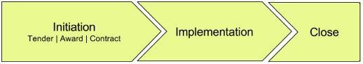
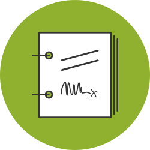
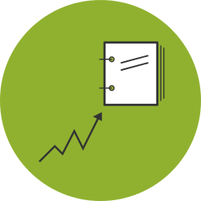
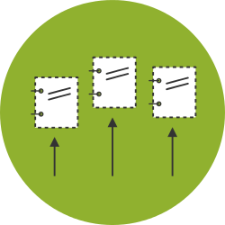

Definitions
The Open Contracting Data Standard is used to describe unique contracting processes. The first step towards publishing open contracting data is to identify the contracting processes in your data. A contracting process ties together information about the different stages related to the lifespan of a contract, beginning with planning, progressing through initiation and implementation stages, and ending when a contract is completed or otherwise closed.
Contracting Process
In OCDS you must have a unique contracting process, and associated Open Contracting ID for each initiation process that takes place. In the case of procurement, this means a unique contracting process for every tender.
There can be multiple awards, contracts and implementation details as part of each open contracting process, but there should only ever be one tender in a process.

The figure above describes common stages in a procurement contracting process. The OCDS can also be used to represent other kinds of contracting processes (e.g. direct contracting or direct negotiation). In these cases, there should be some other identifiable initiation process that can be used to define a unique contracting process.
Additional key terms
The world of procurement and contracting has many specialist terms. However, the precise way that these terms are used can vary from sector to sector, and country to country. Below we define how we are using a number of key terms.
Contract
A legally enforceable agreement between two (or more) parties. Often times, contracts are thought of as a single document, the document that is signed by the parties. However, in many cases, a contract can be made up of multiple documents incorporated by reference containing additional terms, specifications, provisions, standard forms or other information (known as addendums, annexes, appendices, schedules, riders, etc.) A contract should also be understood to include any later agreements of the parties that change the terms of the contract (amendments). As a legal document, the law (statutes, regulations, case law) may also impose additional terms or conditions or otherwise affect a contract.
Open Contracting
Norms and practices for increased disclosure and participation in public contracting including tendering, performance and completion. It includes the variety of contract types, from more basic contracts for the procurement of goods, to complex contracts, joint venture agreements, licenses and production sharing agreements. Open contracting encompasses all public contracting, including contracts funded by combinations of public, private and donor sources.
Planning
The process of deciding what to contract for, when and how. A procurement plan is a product of the planning process that indicates an procuring entities planned procurement activities over a period of time. Needs assessment and market studies may be carried out for a particular contract.
Initiation
The activities undertaken in order to enter into a contract. Good public contracting practice favours open competitive bidding or tendering as a method to form contracts (the process of publicly inviting prospective contractors to submit bids for evaluation and selecting a winner or winners). However, contracts can be awarded in other ways, such as through non-competitive direct negotiation, prequalification of bidders, and other methodologies. The contract is then "awarded" to a selected contractor. Once the contractor has been selected and the terms of the contract have been agreed, the contract is signed (or executed) by the parties, and becomes active on an effective date.
Implementation
 The implementation of the contract in accordance with the obligations laid out therein. Often, contractors will enter into additional contracts with sub-contractors in order to implement the public contract. Implementation information would include payments made, deliverables or targets met, and assessments of quality.
The implementation of the contract in accordance with the obligations laid out therein. Often, contractors will enter into additional contracts with sub-contractors in order to implement the public contract. Implementation information would include payments made, deliverables or targets met, and assessments of quality.
Completion
The confirmation that all obligations (deliverables and payments) of the contract have been completed, or that the contract has been terminated for some other reason.